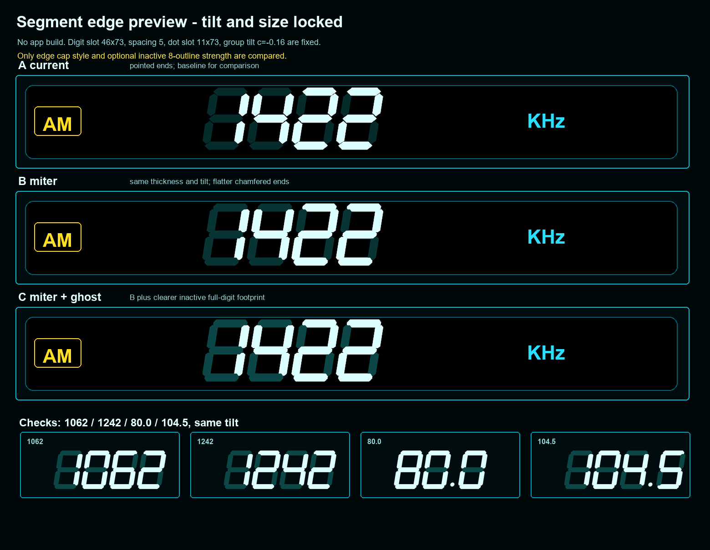

Segment Edge Choice
This is only a review preview. No IPA or app build has been published from this page.
Locked: digit slot 46x73, spacing 5, dot slot 11x73, group tilt c=-0.16.
Choose A, B, or C only after checking 1422 and the bottom test frequencies.

A currentBaseline pointed end shape. No edge redesign.
B miterSame size, thickness, and tilt. Flatter chamfered LED-style ends.
C miter + ghostB plus stronger inactive 8-outline, so 1 and 4 do not look too small.